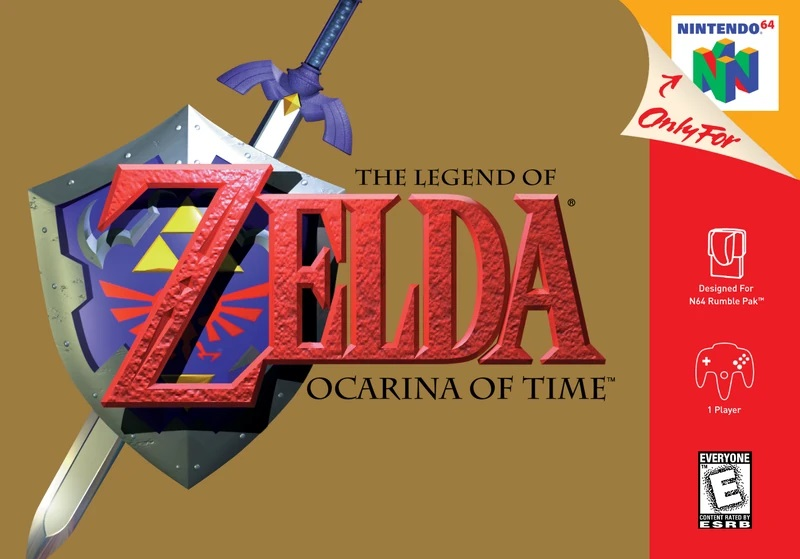
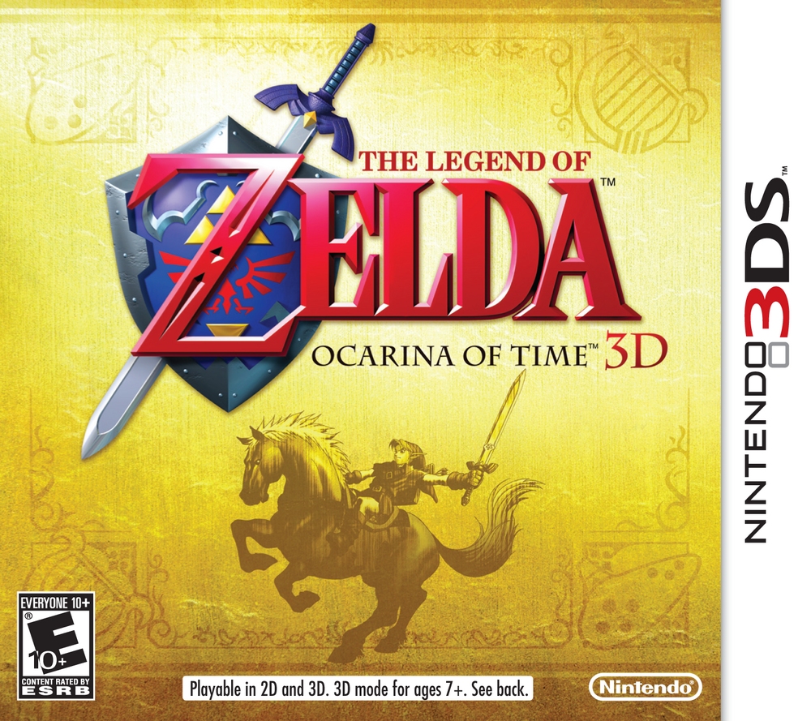
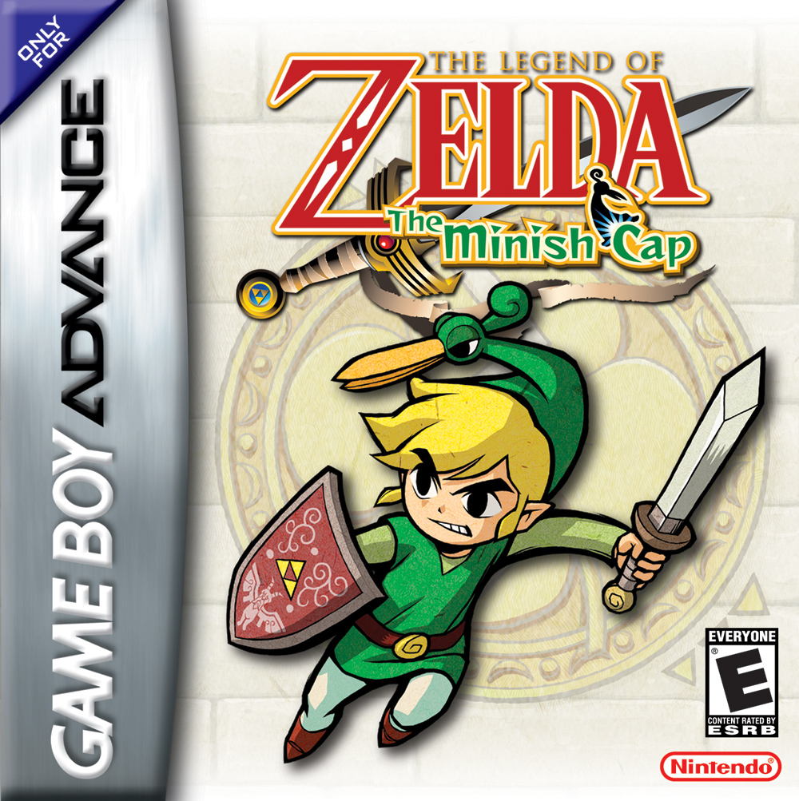
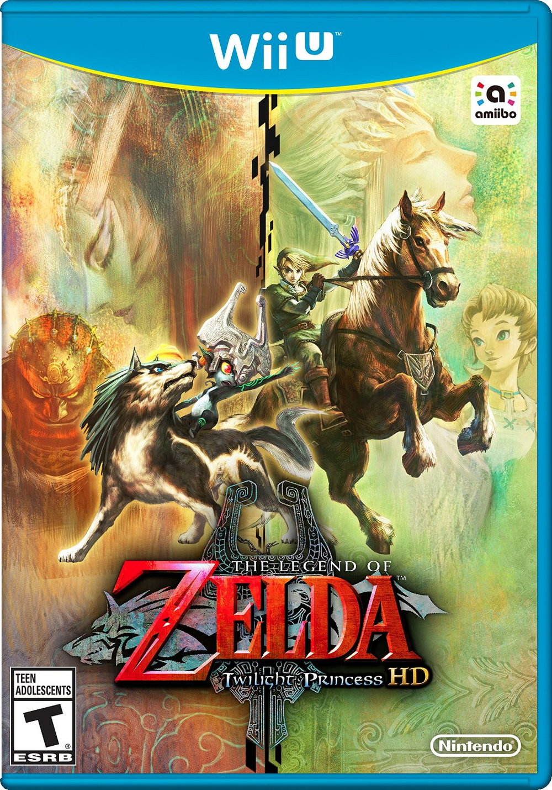
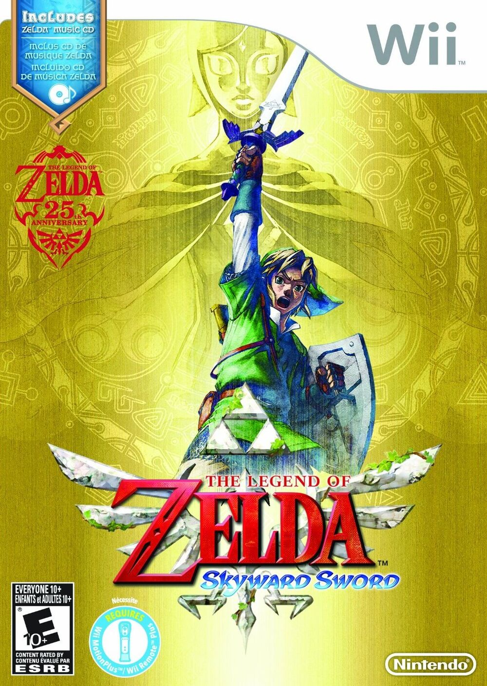

A Complete Collection of all TLoZ Games, available to download or purchase
OUR MISSION
TLoZ Almanac is dedicated to the preservation and distribution of The Legend of Zelda games.
Game Catalogue
All physical games come with the original box and manual. All digital games are in their respective formats
The Legend of Zelda (NES Version)The Legend of Zelda (GBA Version)The Adventure of Link (NES Version)The Adventure of Link (GBA Version)The Legend of Zelda: A Link to the Past (SNES Version)The Legend of Zelda: A Link to the Past & Fours Swords Edition (GBA Version)The Legend of Zelda: Link's Awakening (Gameboy Version)The Legend of Zelda: Link's Awakening DX (GBC Version)The Legend of Zelda: Link's Awakening (Switch Version)

The Legend of Zelda: Ocarina of Time (N64 Version)The Legend of Zelda: Ocarina of Time -Master Quest- (Gamecube Version)

The Legend of Zelda: Ocarina of Time 3D (3DS Version)The Legend of Zelda: Majora's Mask (N64 Version)The Legend of Zelda: Majora's Mask 3D (3DS Version)The Legend of Zelda: Oracle of Seasons (GBC Version)The Legend of Zelda: Oracle of Ages (GBC Version)The Legend of Zelda: The Wind Waker (Gamecube Version)The Legend of Zelda: The Wind Waker HD (Wii U Version)The Legend of Zelda: Collector's Edition (Gamecube Version)The Legend of Zelda: Four Swords Adventures (Gamecube Version)

The Legend of Zelda: The Minish Cap (GBA Version)The Legend of Zelda: Twilight Princess (Gamecube Version)The Legend of Zelda: Twilight Princess (Wii Version)

The Legend of Zelda: Twilight Princess HD (Wii U Version)The Legend of Zelda: The Phantom Hourglass (DS Version)The Legend of Zelda: Spirit Tracks (DS Version)

The Legend of Zelda: Skyward Sword (Wii Version)The Legend of Zelda: Skyward Sword HD (Switch Version)The Legend of Zelda: A Link Between Worlds (3DS Version)The Legend of Zelda: Triforce Heroes (3DS Version)The Legend of Zelda: Breath of the Wild (Wii U Version)The Legend of Zelda: Breath of the Wild (Switch Version)The Legend of Zelda: Tears of the Kingdom (Switch Version)